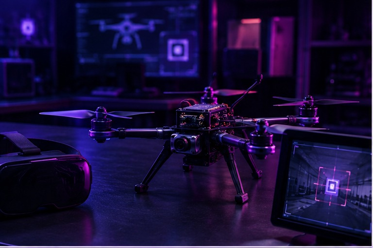
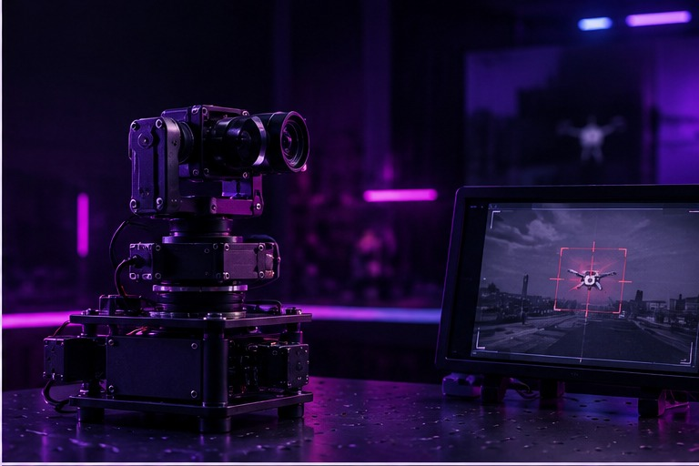
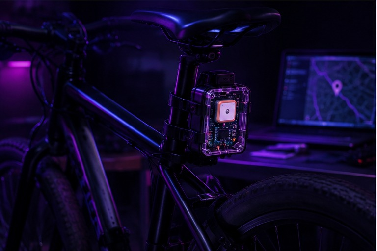
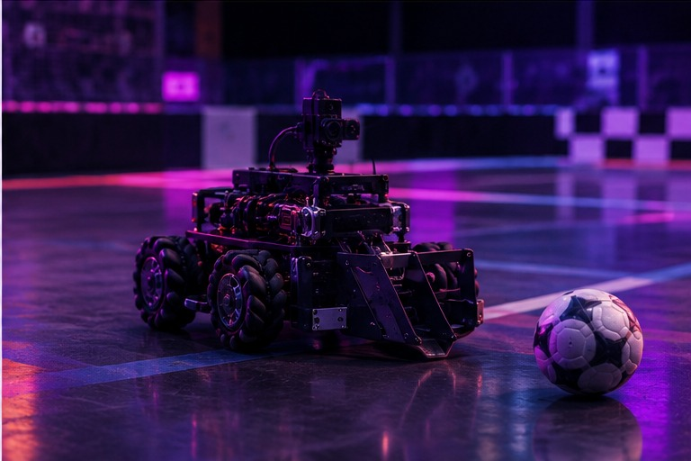

Build
CAD, mechanisms, fabrication and physical prototyping — turning an idea into hardware that can move.
I’m Aman Sharma, a Materials Engineering student at IIT Jodhpur working toward robotics and autonomous systems. I build and study machines across mechanisms, embedded systems, computer vision, control and real-world prototyping.
My work sits where mechanical design, electronics, software and autonomous behavior meet.
CAD, mechanisms, fabrication and physical prototyping — turning an idea into hardware that can move.
IMUs, cameras, GPS and computer vision for understanding position, motion and the environment.
Embedded code, kinematics, control loops and robotics software that connect perception to action.
Each project opens inside the same portfolio environment, with room for detailed documentation, diagrams, media and technical notes.

Human detection and tracking pipeline with OrangeCube+, SIYI MK15 and vision-based target interaction.

Missile interception and guidance study combining MATLAB/Simulink, ArUco tracking and a 2-axis gimbal.

A practical tracking concept for locating parked cycles with real-time coordinates and offline caching.

Built manually controlled bots from scratch for IIT Jodhpur’s Prometeo robotics competition.
The tools and domains I use to move from mechanical ideas to working robotic systems.
For robotics projects, collaborations, internships or just a technical conversation, reach out.